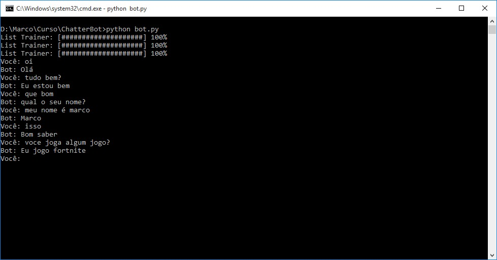

ChatterBot
ChatBot feito em Python

ChatBot desenvolvido em Python3 ultilizando a API do 'ChatterBot'
Instale a API do ChatterBot em sua maquina, Instale através do pip: ("pip3 install chatterbot")
Instale a API do ChatterBot em sua maquina, Instale através do pip: ("pip3 install chatterbot")